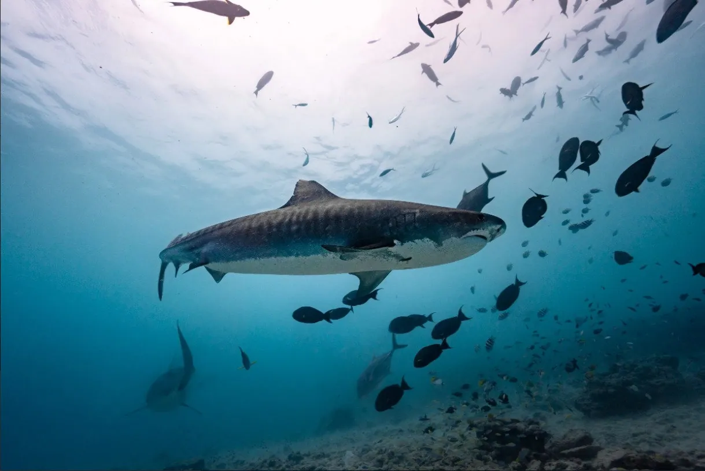

The Silent Architects: How Coral Reefs Build Worlds
Content for the coral article will be written here. It will discuss coral biology, its importance to the ecosystem, and link to conservation efforts on Ocean Guardian.life.

In-depth stories, scientific insights, and cinematic journeys from the front lines of marine conservation.
A deep dive into the biology and importance of coral ecosystems that underpin marine biodiversity...
Read ArticleThe challenges and triumphs of planning our flagship documentary series in the Gulf of Thailand...
Read ArticleA collection of stories, research, and updates from our ongoing mission to give the ocean a voice.
Dive into our visual stories from the front lines of marine exploration and conservation. Click below to watch more amazing videos!
Content for the coral article will be written here. It will discuss coral biology, its importance to the ecosystem, and link to conservation efforts on Ocean Guardian.life.
This article will provide an exclusive look into the planning and pre-production of the 'Thirteen Moons' documentary. The series is set to be filmed on location in the Gulf of Thailand, operating out of our PADI 5-Star partner facility. To see where the adventure will begin and support the mission, you can book your own dive trip in Koh Samui and experience these world-class sites firsthand.
A practical guide for divers on how to interact with marine life responsibly. Knowledge is the first step, but putting it into practice with seasoned professionals is key. We highly recommend undertaking your training and fun dives with a reputable PADI 5-Star center. For those diving in Thailand, our operational hub, Buceo Koh Samui, provides the highest standards of safety and eco-conscious dive training.
A trip report from the Fuvahmulah Atoll, detailing the logistics and thrill of diving with tiger sharks. This will be a powerful tool for promoting future trips on Maldives Holiday Escapes.com.
